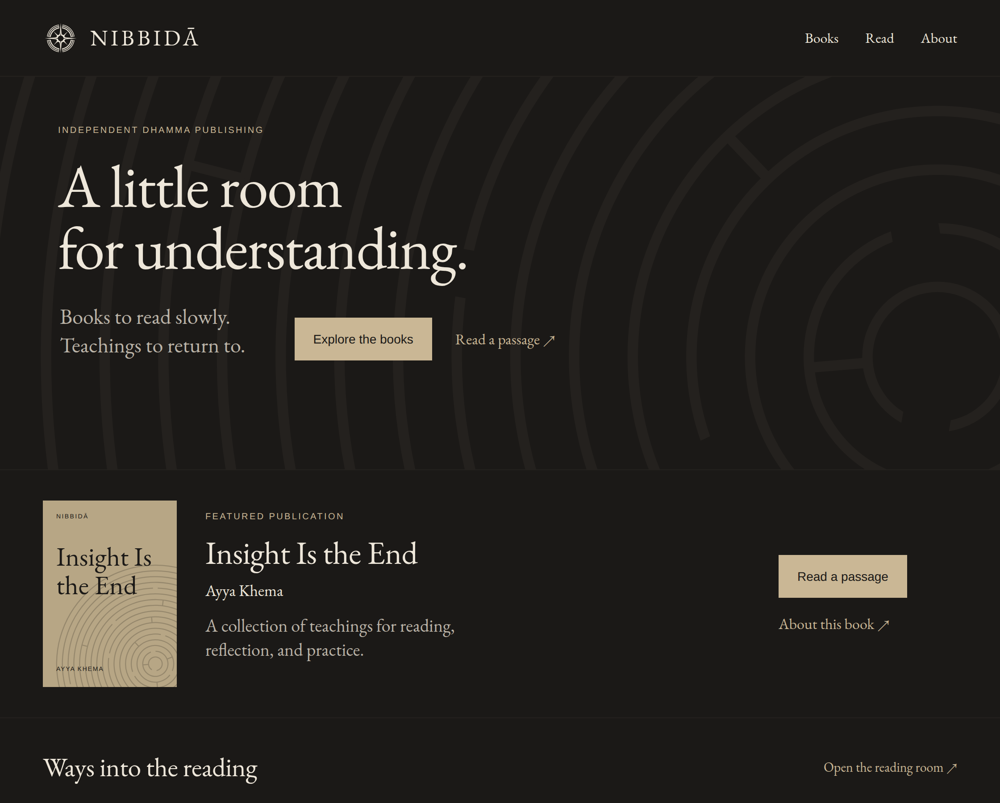
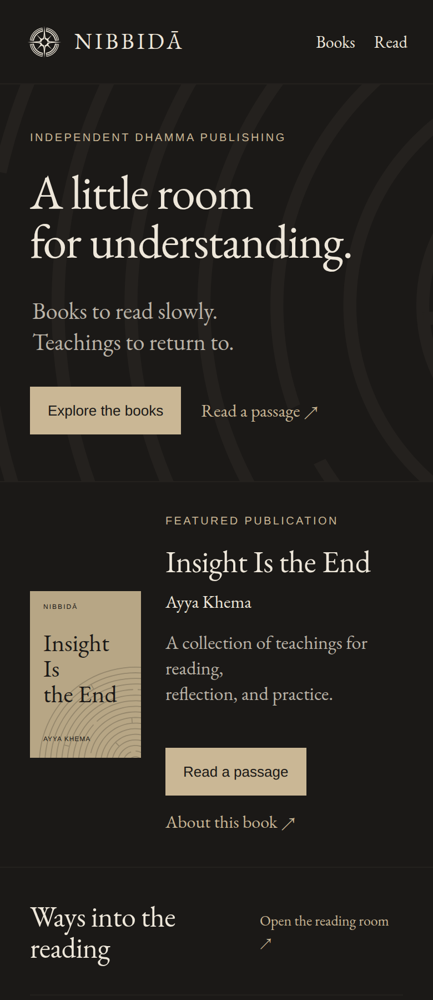
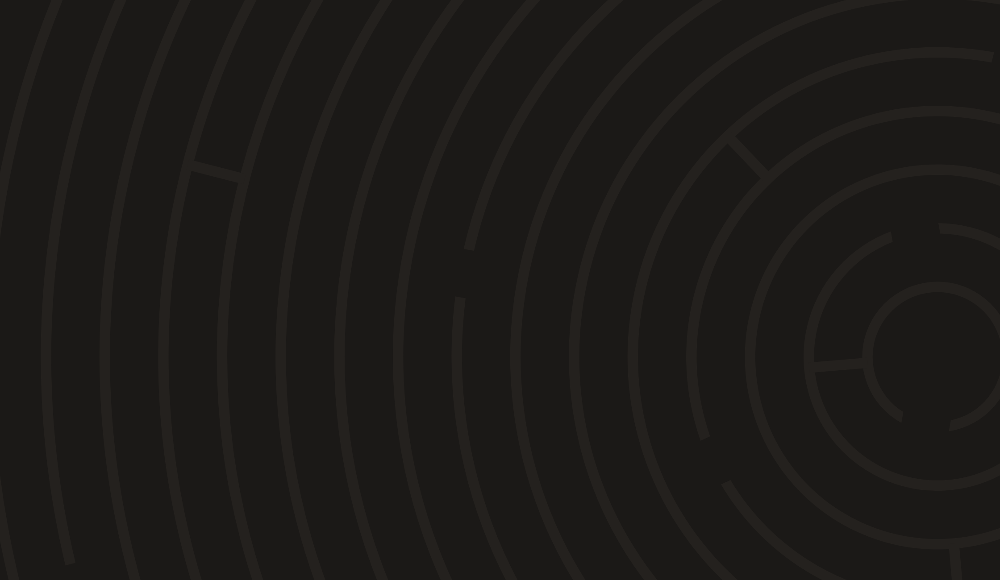
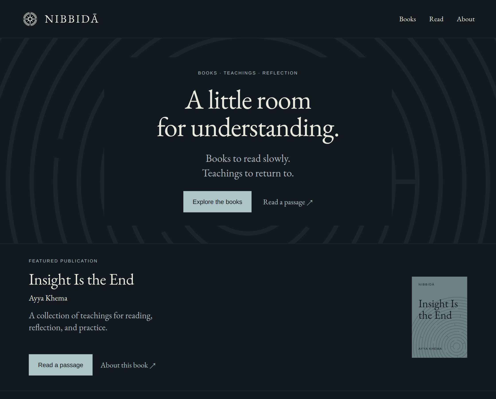
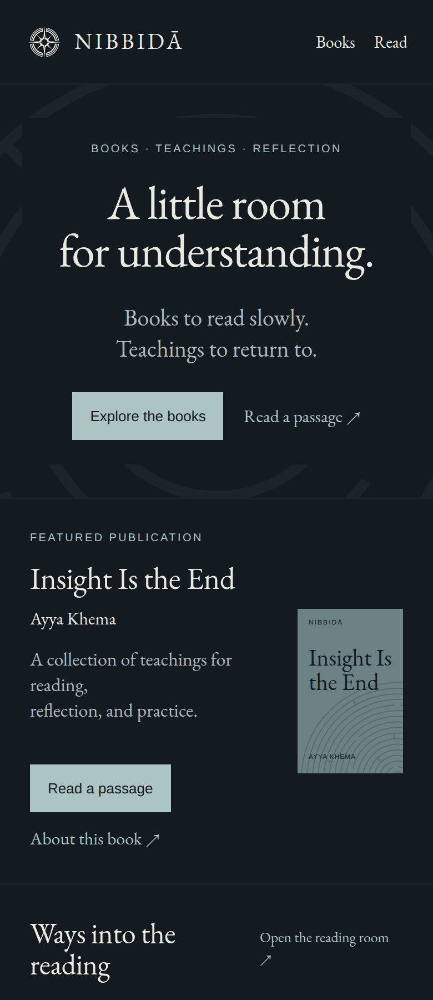
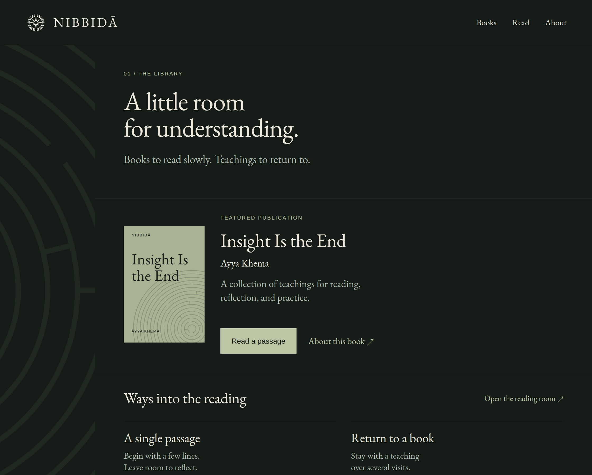
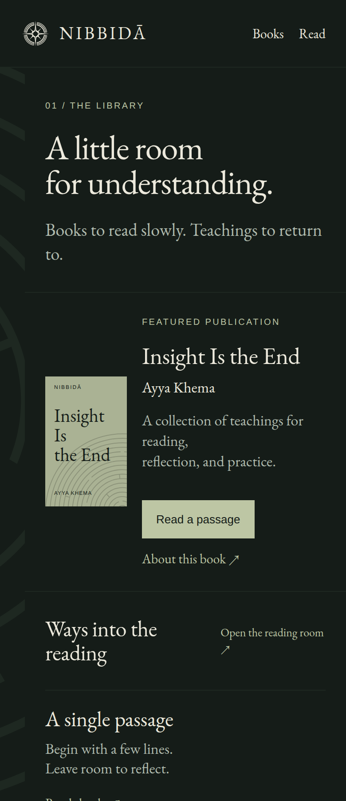

The supplied 06A emblem and sixteen-band labyrinth, with three layouts and two background scales each. The maze is a single oversized field, never a repeated tile. Desktop previews use the same 1,120 × 900 viewport; phones use 390 × 900.
A / Recommended
The expanded labyrinth

bg
#1b1917
maze
#24211e
ink
#eee7da
secondary
#bbb4a8
accent
#cab795

Phone / same maze scale
An open, asymmetric introduction. The labyrinth remains expansive; the book and reading actions are easy to find.
Only the crop changes. Text and controls reflow. The full labyrinth does not shrink into a small symbol.
Open local preview ↗
Two scales / same 1,120 × 650 crop window

2,350 px field diameter
Choose 2,350 px. More turns and interruptions remain visible. The larger scale is calmer but less distinctly a maze.
B / More ceremonial
The quiet center

bg
#131b20
maze
#1b242a
ink
#e9e9df
secondary
#afb9bd
accent
#adc4c4

Phone / same maze scale
The centered introduction creates a formal pause. Its surrounding circular structure can feel like a halo or target.
Only the crop changes. Text and controls reflow. The full labyrinth does not shrink into a small symbol.
Open local preview ↗
Two scales / same 1,120 × 650 crop window
1,900 px is more legible as a labyrinth; 2,500 px emphasizes broad curves. Neither is as open as A.
C / Library first
The edge of the page

bg
#151c18
maze
#1e2821
ink
#ece9dc
secondary
#b0bbae
accent
#bdc6a4

Phone / same maze scale
A narrow maze margin makes room for the featured book. This is the most practical option for a growing catalog.
Only the crop changes. Text and controls reflow. The full labyrinth does not shrink into a small symbol.
Open local preview ↗
Two scales / same 1,120 × 650 crop window
2,000 px shows more route changes. At 2,700 px the narrow margin becomes closer to an abstract stripe.